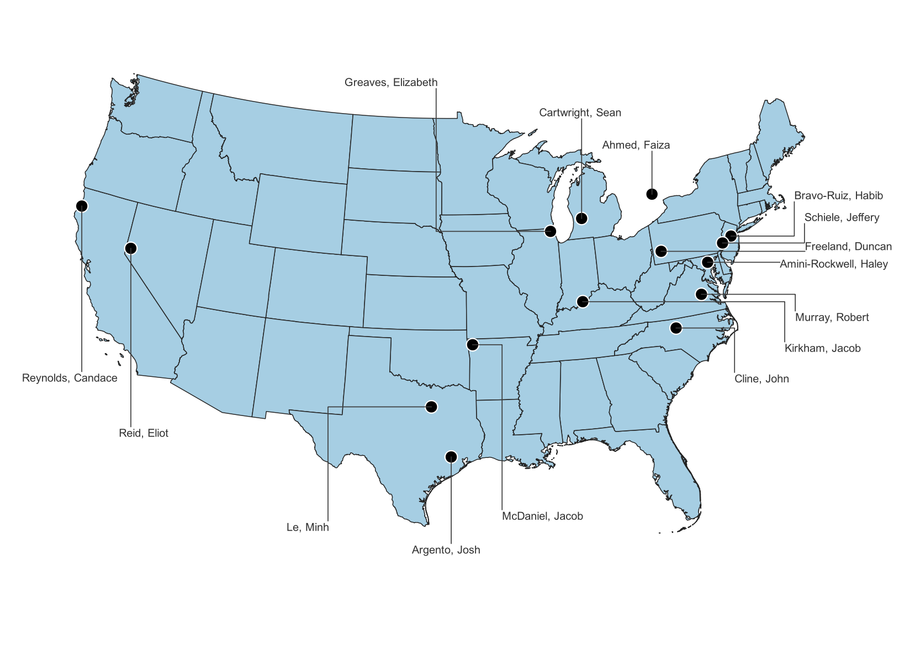
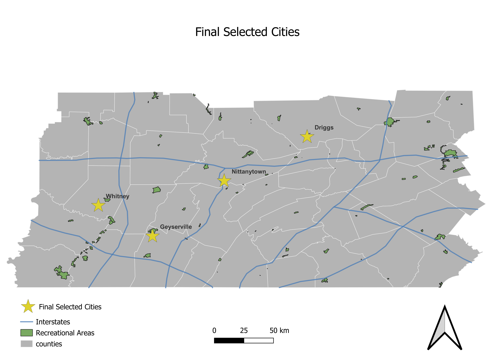

Application built using ArcGIS Javascipt API displaying a natural gas pipeline service host by
ArcGIS
Online sampleserver.
In this exercise, I learned how to programmatically configure popups,
ow to use the ArcGIS JS API built-in renderer to classifiy and style features acccording to the
dataset.
I futhuered my experience in initializing a web map, displaying hosted features or services, and
setting
the center and zoom for a web application.
Mapbox map showing school zones and schools in the Piedmont Triad area of North Carolina.
3D Web Scene Web application built using ArcGIS JS API displaying a service host on AGOL by the
Texas Department
of Transportation.
Field map allow users to locate clothes/item donation drop-off location. The app collects user and date
and
time information from each entry.
Geospatial Analysis
Drive Time Analysis of a ficitonal sushi restaurant that needs to close a location based on various
factors
- in AGOL.

In this project, I used Postgres/PostGIS Spatial SQL to map the class roster from my Geog 868 Spatial
Database Management for Geospatial Professionals course (Fall 23).
We were provided the class roster with postal codes in one file and coordinates in another file.
The task was to create a relational database, appropriately relating the two datasets with the postal
code
as the primary key, do the appropriate SELECT queries to save as a "view" in Postgres, then map the
student
locations in QGIS.

Another project from Spatial Database Management (Geog 868).
In this project, I used Postgres/PostGIS Spatial SQL to combine non-spatial quieries with spatial
queries
on a fictional dataset to assist Jen and Barry select optimal cities for an ice cream shop.
I was provided spatial datasets and was tasked with selecting counties based on county-level criteria,
then
cities within those counties that then meet city-level criteria.
Lastly, the assignment required a spatial query regarding specific distances to interstates and
recreational
areas, then to map the final selected cities in QGIS.
Story Maps
Story map of how coal shaped West Virginia's history.